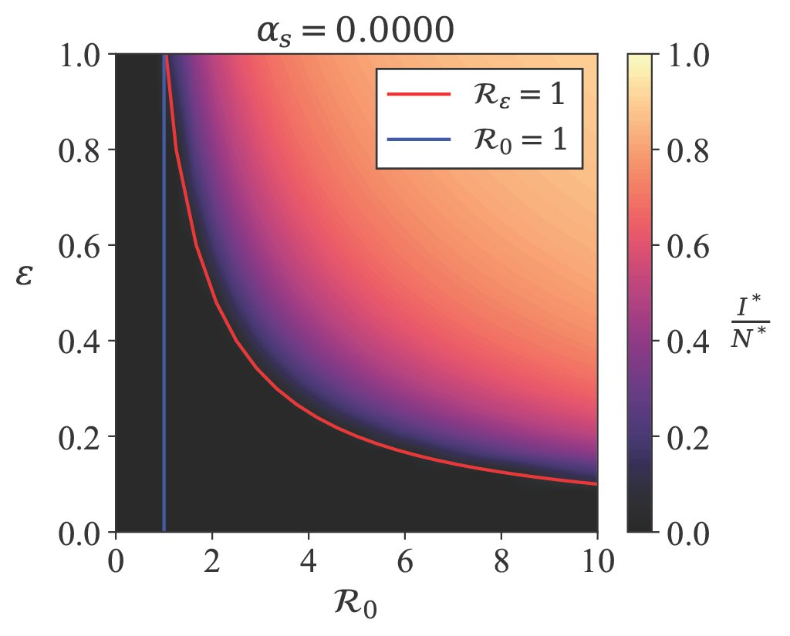
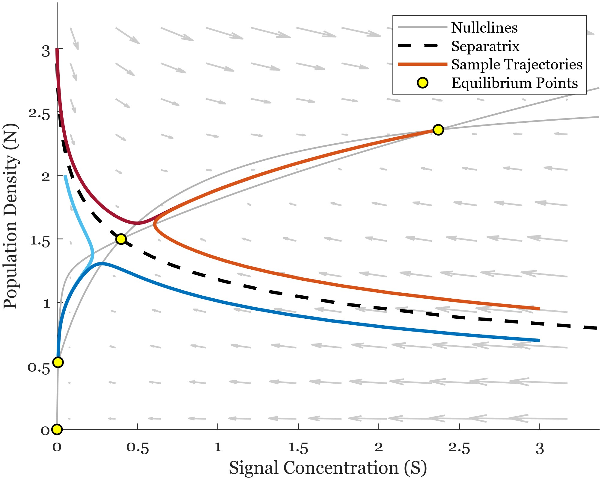

Research
I use differential equations and stochastic processes to study epidemiological dynamics across scales.
Epidemiological dynamics of post-infection mortality
My first research experience was the 2023 UCF Applied and Computational Mathematics REU mentored by Prof. Zhisheng Shuai. I studied compartmental epidemic models, focusing on how post-infection mortality and partial immunity shape long-term disease behavior like epidemic cycles and endemicity.
This work developed into my honors undergraduate thesis, A Mathematical Modeling Approach to Investigate the Impacts of Post-Infection Mortality and Partial Immunity on Disease Endemicity. The project combined equilibrium and stability analysis to answer questions about long-term disease persistence. (see Publications)
Building off of this work, we examined the joint impact of incidence functions and post-infection mortality on disease endemicity and the formation of epidemic cycles in a simple compartmental model (see Publications). Our manuscript will soon be published with The Royal Society Proceedings A.
More broadly, I am interested in how incidence functions and multistrain systems shape the epidemiological and evolutionary dynamics of pathogens. My current unpublished and future work includes the analysis of two-strain infection models relevant for Streptococcus pneumonia infections and general facultative pathogen models to understand the evolution of virulence in environmentally acquired pathogens.

Quorum sensing and bacterial heterogeneity
During the 2024 Georgia Tech Mathematics REU, I worked with Profs. Rachel Kuske and Sam Brown on mathematical models of bacterial population growth and communication, with an emphasis on quorum sensing in Pseudomonas aeruginosa.
A central question is how cell-to-cell variability and switching behavior can produce heterogeneous or bimodal population-level responses. This naturally connects deterministic population models with stochastic descriptions of individual-level behavior.
